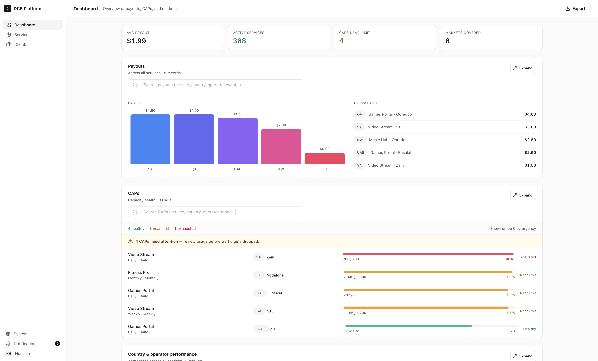
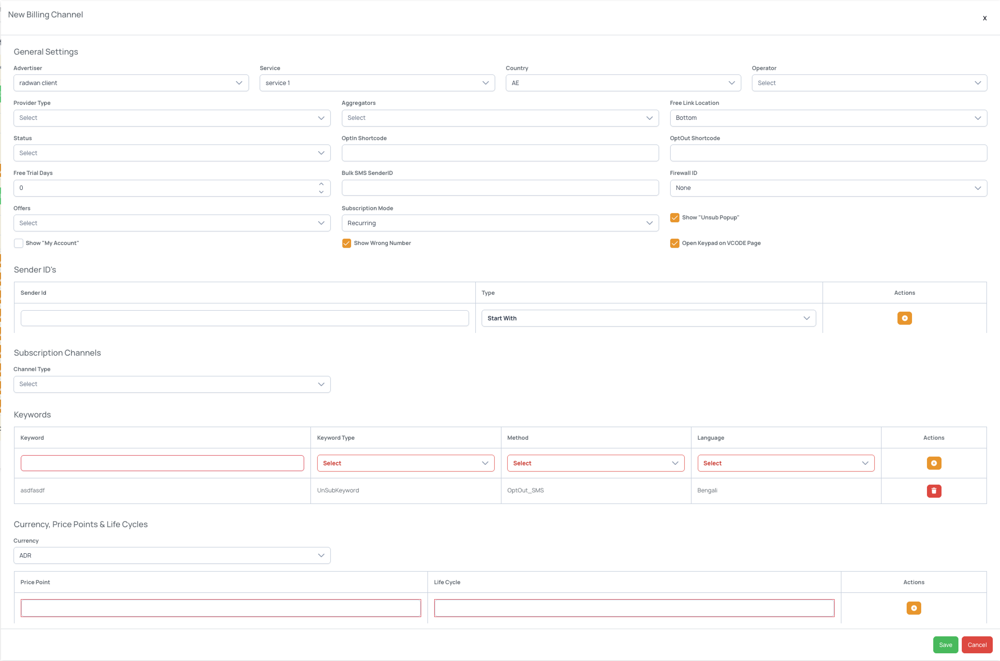
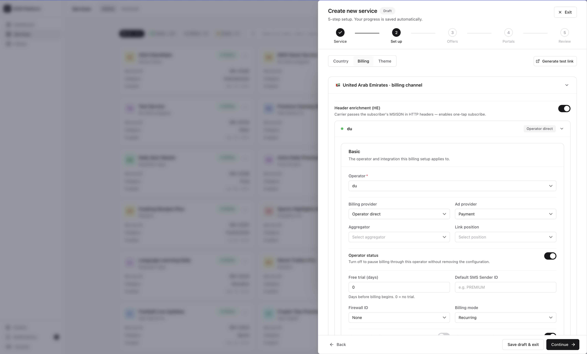
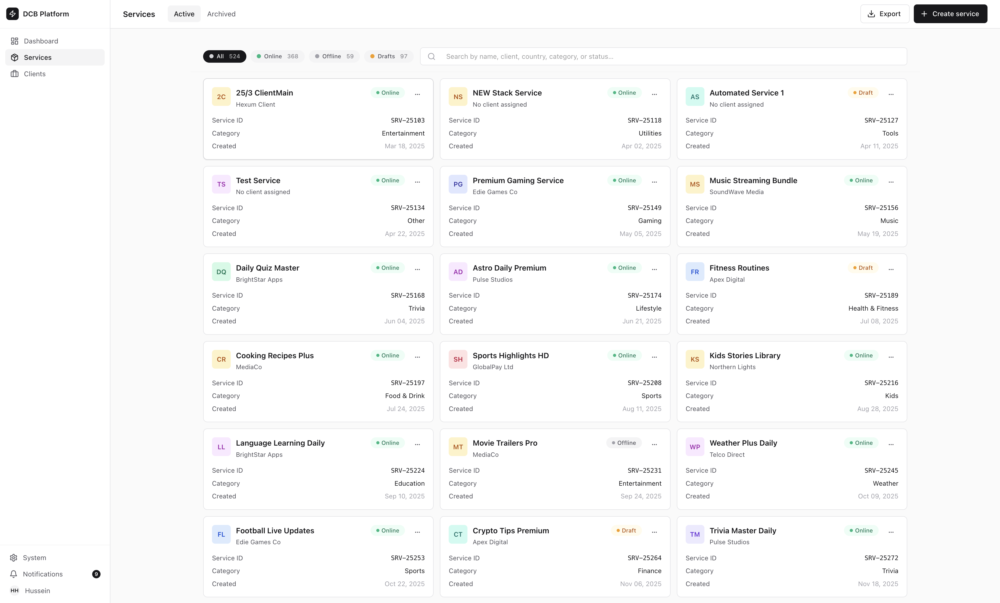
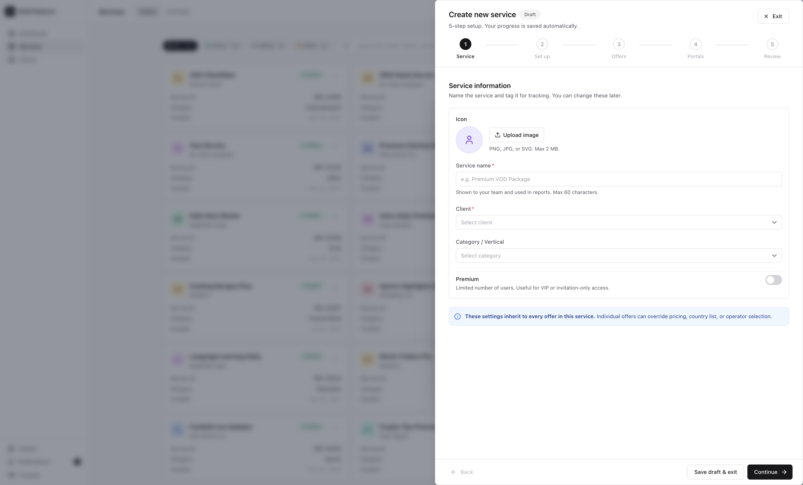
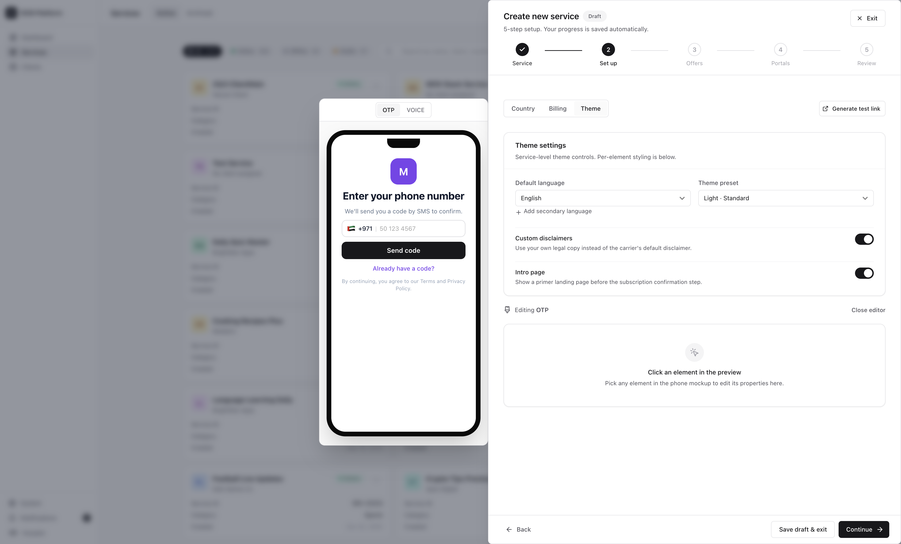

End-to-end redesign of a Direct Carrier Billing platform. New information architecture, a scalable design system, and a full React component library handed off to engineering.

Dashboard: KPI strip (Avg Payout, Active Services, CAPs, Markets) + Payouts by GEO + CAPs health monitoring
MobiBox is Mobile Arts' core product. A DCB (Direct Carrier Billing) platform used by telecom operators and content publishers across the MENA region to manage subscription services, payouts, capacity limits, and market performance.
When I joined, the platform was functional but visually inconsistent, hard to navigate, and built on a patchwork of UI patterns that had accumulated over years. The engineering team was moving fast, but without a design system, every new screen reinvented the wheel.
"The product works but it doesn't feel like a product. We need it to scale visually and structurally before we grow the team."
My mandate: own the full redesign of the IA, UI, and component system, and close the gap between design and engineering so the team could ship consistently without waiting on designers.
The original platform had no visual system. Forms were long, flat walls of fields with no grouping, no hierarchy, and no feedback states. Every modal was a different shape. The same action looked different depending on which screen you were on. Workflows were fragmented too. Completing a single task required jumping across multiple unrelated screens, breaking focus and adding unnecessary friction.

Billing channel setup: flat form, no grouping, inconsistent controls

Billing setup redesigned: structured layout, clear sections, consistent controls
The original platform had no clear mental model. Operators, services, offers, portals, and billing settings were scattered without hierarchy. I mapped every entity and their relationships, then restructured the nav around three primary objects: Services, Dashboard, and Clients. Everything else became a sub-surface or drawer.
I redesigned four primary surfaces from scratch: the Services overview (grid, search, filter chips, archive/restore), the Service Detail drawer (tabbed: Overview / Offers / Activity), the Analytics Dashboard (KPI strip, Payouts bar chart, CAPs health, Country and Operator performance), and the 5-step Service Creation Wizard.
Built a token-based design system with a single source of truth in design-tokens.ts covering colors, radii, shadows, typography, spacing, motion, and z-index. 24 components from primitives (Button, Input, Chip, StatusPill, BarChart) to full composites (ServiceGrid, DashboardSection, WizardShell). Every component documented in Storybook.
Rather than delivering static Figma specs, I used Claude Code to translate the design system directly into a working React + Next.js + MUI v6 implementation. The team received production-ready TypeScript components, not redlines. This eliminated the interpretation gap between design intent and engineering output.

Services overview: filter chips, search, status pills, 3-dot actions

Service creation wizard: 5-step flow with auto-saved draft state

Inline offer theme editor. Live phone preview updates as you edit. Theme settings, custom disclaimers, and OTP/Voice channel switching in the right panel.
The system follows a strict layer architecture: tokens to primitives to composites to screens. No component reaches across layers. No hex values in component files. The MUI theme overrides ensure visual consistency even when engineers reach for raw MUI components directly.
Every primitive is documented in Storybook 9. Each story covers all variants, states, and compositions. Button, StatusPill, Card, Chip, Input, Banner, StatTile, ProgressBar, BarChart, Switch, and Avatar all have dedicated stories, so the team can browse and test components in isolation without touching the app.
The handoff was complete and immediately integrable. The team received a working Next.js app with full TypeScript typing, Storybook documentation, mock data, and integration instructions. No Figma redlines. No ambiguity.
The design system's token architecture means future team members can restyle the entire product by editing one file. The component API is deliberately thin: wrappers stay under 80 lines, heavy logic stays in MUI underneath.
The most unusual part of this project was using Claude Code as a design-to-engineering bridge. Instead of exporting specs and waiting for interpretation, I used it to generate the React implementation directly from the design system I had defined.
This meant decisions I made in Figma (component variants, token values, spacing logic, interaction states) arrived in the codebase exactly as designed. The team didn't have to guess. Edge cases I had considered (cascade-load pagination fix, typed tab unions, render-prop dashboard shells) were present in the first commit.
For a fast-moving ad-tech product with a small engineering team, that's not a nice-to-have. It's the difference between design being a bottleneck and design being a multiplier.